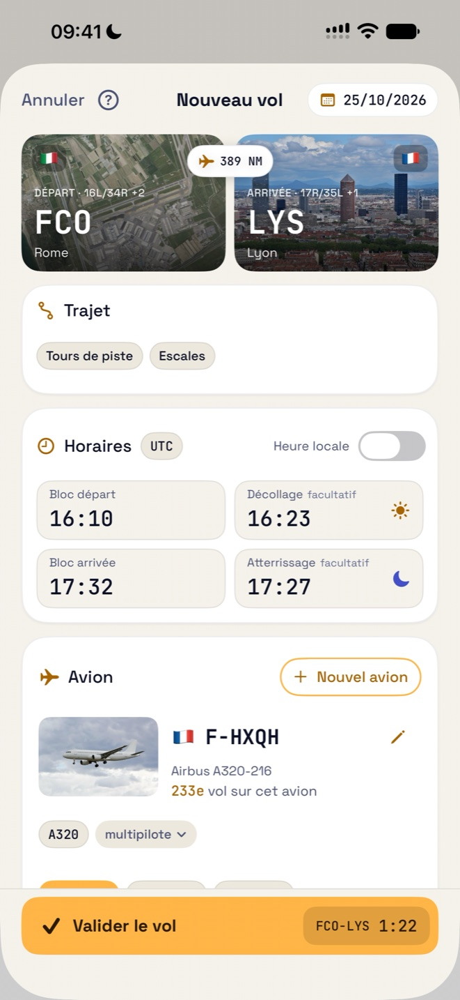
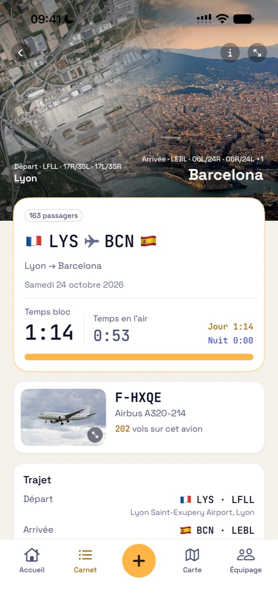
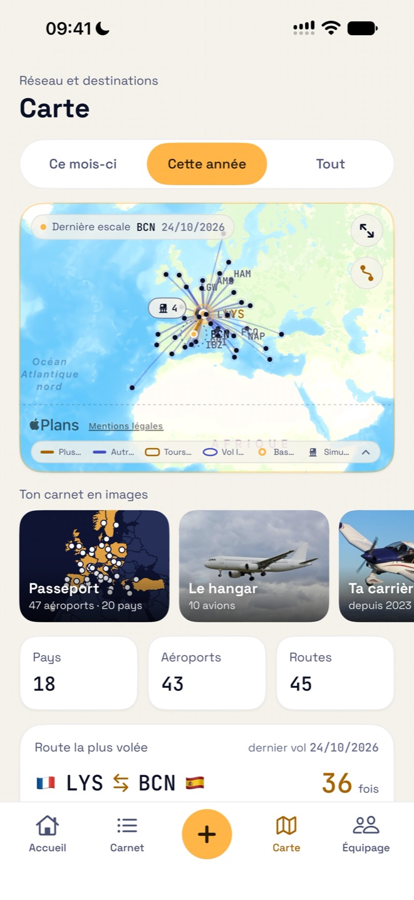
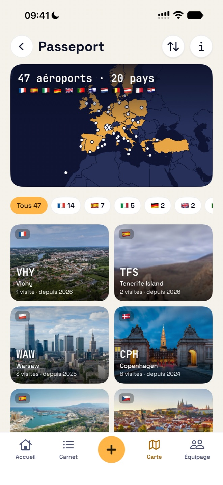
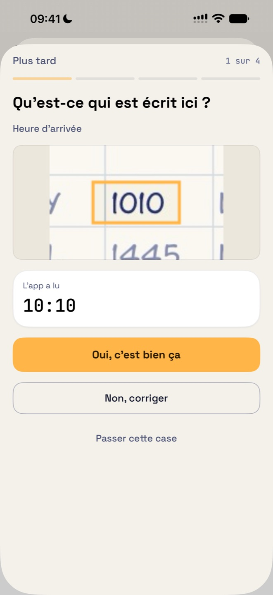
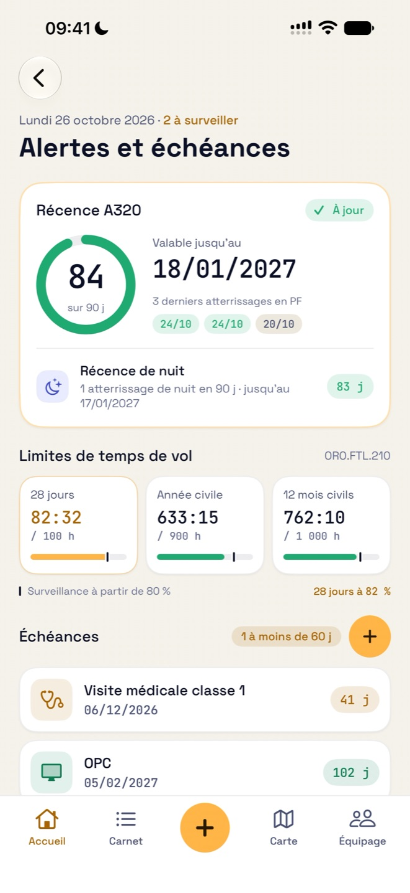

Gratuit
0 € pour vos 50 premiers vols
- Toutes les fonctionnalités, imports compris
- Aucun compte à créer
- Aucune publicité
Carnet de vol EASA · AMC1 FCL.050
Chaque vol finit par un arrondi, le flare. Puis il rejoint votre carnet.
Le carnet de vol EASA des pilotes de ligne, des pilotes privés et des élèves pilotes, sur iPhone et iPad. Le temps de nuit, les décollages et les atterrissages sont calculés pour vous ; récence, limites de temps de vol et échéances restent sous vos yeux.
Gratuit pour vos 50 premiers vols · Sans compte · Sans publicité
Flare tient votre carnet selon le modèle que l’EASA fixe dans l’AMC1 FCL.050 : les mêmes colonnes, les mêmes totaux, page après page.
Flare n’est ni certifiée ni approuvée par l’EASA, qui n’approuve pas les apps de carnet de vol : elle suit le format de l’AMC1 FCL.050, et c’est votre autorité nationale qui accepte ou non un carnet électronique.
Tout ce que l’EASA vous demande de consigner, sans les corvées.
Saisissez le trajet et les heures bloc : le temps de nuit et les décollages et atterrissages de jour ou de nuit sont calculés d’après la position du soleil, selon la définition EASA ou votre propre règle.
Les pistes du départ et la ville d’arrivée, en vraies photos. Les tours de piste sont dessinés sur la vraie piste, les vols locaux sur la carte, et les séances simulateur ont la leur.
Photographiez chaque page en paysage. Flare teste sa lecture avant de garder la photo, apprend votre écriture grâce à quelques cases que vous confirmez, et montre la case de votre photo à côté de toute valeur dont il doute. Tout est lu sur votre appareil.
Récence FCL.060 par type d’avion, limites de temps de vol ORO.FTL.210 et rappels avant l’expiration de votre visite médicale, de vos qualifications et de vos contrôles.
Reprenez votre historique depuis un fichier CSV ou Excel, ou un carnet PDF au format EASA. Les colonnes sont reconnues pour vous et les totaux contrôlés.
Importez votre planning depuis le calendrier de l’iPhone ou un fichier .ics : les vols effectués sont ajoutés, prêts à compléter.
Un carnet EASA prêt à imprimer en PDF, A4 paysage, et un export CSV de tous vos vols.
Toutes vos routes et vos aéroports sur une carte. La base des aéroports est intégrée à l’app.
Un passeport de vos aéroports et pays, un hangar de tous les avions pilotés, votre carrière étape par étape, vos records et votre année en vol, prêts à partager.
Les séances FSTD avec leur exercice (OPC, LPC, EBT…), l’examinateur et la fonction, dans leur propre colonne : jamais comptées comme temps de vol.
Filtrez votre carnet et voyez les totaux des seuls vols affichés.
Additionnez et soustrayez des durées en heures et minutes ou en heures décimales, et lisez le total des deux façons.
Temps total, récence et prochaine échéance sur l’écran d’accueil et l’écran verrouillé ; la pastille sur l’icône compte ce qui demande votre attention.
De courts films montrent chaque geste dans l’app, dans votre langue et dans son thème jour ou nuit.
Une seule app pour iPhone et iPad, en français, anglais, allemand, espagnol et italien.






De courts films de l’app, tels que son Aide les montre.
Commencez gratuitement. Sans publicité.
0 € pour vos 50 premiers vols
29,99 € par an
79,99 € une seule fois
Seuls les vols comptent : les séances simulateur et les mises en place ne comptent pas. Sans Pro, ou une fois l’abonnement terminé, votre carnet reste consultable, modifiable et exportable : seul l’ajout de vols demande Pro.
Le paiement et le renouvellement sont gérés par Apple avec votre compte Apple. Le prix est indiqué en euros ; l’App Store affiche le prix de votre pays.
Flare n’a ni compte ni serveur. Le développeur ne collecte aucune donnée personnelle.
Import, planning, abonnement, iCloud : les réponses sont sur la page d’assistance.
Aller à l’assistance